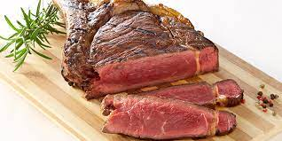

Steak
Revenir a l'accueil

(photo non adéquat)
Description
un steak qui a l'air super bon, c'est la regalouzz ou quoi
Ingrédiants
- ½ tasse de beurre
- 4 gousses d'ail, émincées
- 2 cuillères à café de poudre d'ail
- 2 kilos de steaks de filet de bœuf
- sel et poivre
Etapes
- Préchauffez un gril extérieur à feu vif et huilez légèrement la grille.
- Faire fondre le beurre dans une petite casserole à feu moyen-doux;
incorporer l'ail émincé et la poudre d'ail. Mettre de côté.
- Assaisonner les deux côtés de chaque steak avec du sel et du poivre.
- Placer les steaks sur le gril préchauffé et cuire 4 à 5 minutes de chaque côté.
Un thermomètre à lecture instantanée inséré au centre doit indiquer 140 degrés F
(60 degrés C) pour une cuisson moyenne.
- Transférer les steaks dans des assiettes chaudes; Badigeonner généreusement
le dessus de beurre à l'ail et laisser reposer 2 à 3 minutes avant de servir.